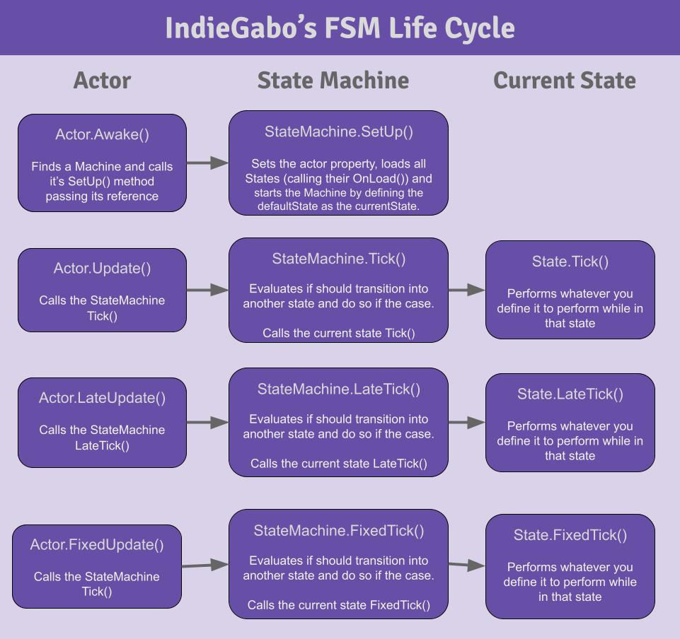

Using the state machine
Behold: THE STATE MACHINE!!!
Now that we know how to setup an a actor and how to create its states we can finally use the state machine.
The StateMachine component, different from the actors and states, is a ready to use component. So you do not need to worry about creating any script for it. Just attach to a GameObject, attach states to the same GameObject, set a default state and you are good to go.
But, if you want to understand a little about it// Some other code Let’s do it!
Life Cycle
Let’s take a look at the machine’s Life Cycle:
{kind=link}
Nota
The StateMachine at its current version has 5 statuses: Off, Loading, Ready, On and Paused. They are declared as the enum
IndieGabo.FSM.MachineStatus.
I’d like to focus some attention on these steps:
The machine first
StateMachine.statusisMachineStatus.Off.
Note that although our machine belongs to MonoBehaviour, it is the Actor wich sets up the machine. That
is because the machine can only start operating when the actor is already awake. Once Awake, the actor calls StateMachine.SetUp()
letting it know who its actor is.
At this point the machine will change
StateMachine.statusfromMachineStatus.OfftoMachineStatus.Loading.
Here the machine will load up all the states attached into its GameObject and call subsequently all of the attached states State.OnLoad()
followed by their State.SortTransitions(). This last method makes sure transitions priorities get in order. This is the importancy of registering any
StateTranstion of your state inside its State.OnLoad().
Now the machine will change
StateMachine.statusfromMachineStatus.LoadingtoMachineStatus.Ready.
Once ready, the machine will start by using StateMachine.ChangeState() to set the chosen default state (At the inspector. By you. Do not forget
to do it).
The machine will finally change
StateMachine.statusfromMachineStatus.ReadytoMachineStatus.Onand it is running!!! Hurray!
Tickers Methods and Machine Statuses
Once the machine has started, meaning its StateMachine.status is MachineStatus.On, it will proceed passing forward the tickers methods (called inside the
actor’s “frame handlers”) to the current state. As long as the StateMachine.status is MachineStatus.On it will do so.
If at any time you need to pause this behaviour, you can call StateMachine.Pause() and it will set StateMachine.status to MachineStatus.Paused.
Consequently, none of the tickers will be passed forward to the current state, therefore we can considered it as paused.
// Some other code from inside a state
public void Tick()
{
machine.Pause(); // Pausing the machine
}
// Some other code
To unpause, simply call StateMachine.Resume() and the StateMachine.status will be MachineStatus.On again.
// Some other code from inside a state
public void Tick()
{
machine.Resume(); // Resuming the machine.
}
// Some other code
Setting up the machine
You can simply create a single GameObject and attach the StateMachine component into it. Same goes for the Actor. Take a look:
But, as the actor’s GameObject tends to have multiple components attached into it, for the sake of organization, i find more convenient to proceed creating an GameObject for the actor and use the machine as its child. Check it out:
Both strategies will work transparently for you. Just choose yours.
As you could observe, i’ve prepared a menu item for you to put a new state machine into your hierarchy. But if you wish to attach the StateMachine component into any GameObject, feel free to search for it using the “Add Component” inspector button.
All set!
Checkout the API documentation if you want to know more about these classes. For now, i’d say you have all the tools needed to start benefiting from the state machine!
HURRAY!! Go do something awesome and let me know about it!